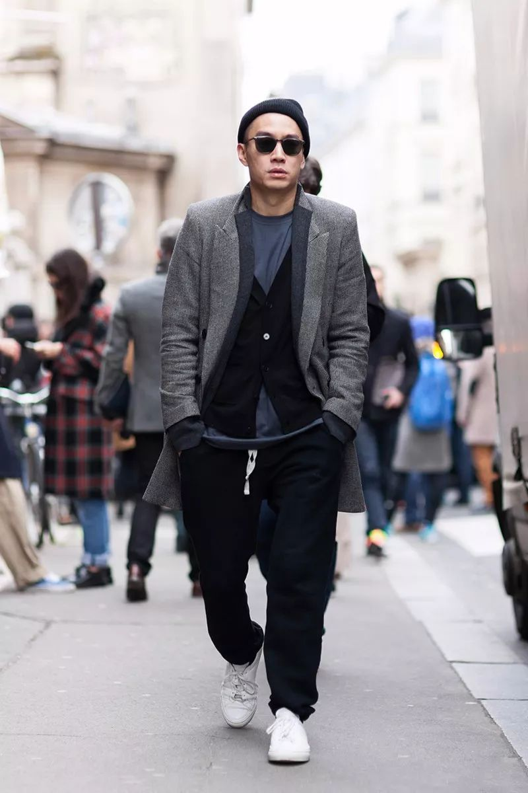

上週，如果你幸運購入 Jil Sander +J 系列的話，這品牌將會是各位男士搭配 +J 最好的鞋類選擇—— Common Projects。
若要我們形容 Common Projects，只能說，這是業界人士默默在穿，卻不讓你知道的品牌。其以更加成熟地方式演繹「簡約」與「經典」，不做任何宣傳，不經營社交媒體，僅靠產品悄然無聲地收獲各時尚編輯、名人的心。
美版《GQ》編輯形容道：「談到標誌性的產品設計時，你會想到 Dieter Rams 的電器、 Eero Saarinen 的座椅或 Steve Jobs 的科技產品，那麼……你準備好將 Girolami 和 Poopat（Common Projects 共同創辦人）的球鞋列進你的清單了嗎？」GQ 將 Common Projects 譽為「球鞋界的 Apple」（Apple of Sneakers）。
「在浮誇球鞋的環伺之下，Common Projects 的 Achilles 似乎更能被證明經的起時間考驗。」
01. 品牌創立
光看 Common Projects 現代化、俐落的設計美學，自然而然會聯想到紐約。該品牌由設計師 Peter Poopat 和品牌顧問 Flavio Girolami 於 2004 年在紐約共同創立，Peter Poopat 原是《V Magazine》的藝術總監，Flavio Girolami 則是義大利鞋履品牌的顧問，90 年代中期兩人認識後，意外發現彼此都是基本款球鞋的愛好者，如 Stan Smith、Air Jordan 1 代、Chuck Taylors…..等。但隨著年紀漸長，他們的品味日益成熟，希望能找到外型經典而簡約的「高端運動鞋」，Girolami 在《BoF》的專訪中透露：「我們實在不想再穿 Converse 了」。
「不過 90 年代至 2000 年初，各大精品品牌尚未掀起運動鞋風潮，促使這兩人達成一共識：既然市面上沒有我們滿意的鞋，不如自己來吧！
Girolami 因工作緣故，在義大利有熟識的百年製鞋工廠，上百年來以產製正裝皮鞋聞名，於是 Girolami 負責聯絡工廠，Poopat 則嘗試設計了心目中理想的運動鞋樣版，以他們的話來形容：「一雙舒適又適合搭配服裝的鞋。」這雙運用義大利頂級皮革、柔軟的橡膠底以及高級皮鞋傳統工序所製成的「運動鞋」，也就是 2004 年 Common Projects 發表的第一款鞋，名為 Achilles。
Common Projects 創辦人 Flavio Girolami（左）與 Peter Poopat（右）。photo via GQ US
02. 經典的誕生 Achilles
2004 年 Achilles 首次亮相，這款低筒皮革運動鞋僅提供黑、白、灰三色。你心裡或許在想，這乍看就是雙類似 Stan Smith 的普通白鞋嘛？請容我們提點你一些容易錯過的細節：選用高端義大利 Nappa 牛皮（通常用於頂級沙發或精品上）、鞋頭圓潤而窄、全手工縫製、縫線堅韌而細緻，並搭載義大利產 Margom 鞋底。全鞋流線型構造宛如工藝品般精緻，端看外觀卻表現得毫不費力，這就是 Achilles 最迷人的極簡主義。
最初，雙人組拿著 Achilles 展示給紐約各知名選品店，如 Steven Alan、Opening Ceremony、Stella Ishii 經營的 showroom「The News」……等，只要他們聯繫過的店家，幾乎沒有一間看完實品不引進的。季復一季，Common Projects 的訂單在紐約以「翻倍」成長，後來甚至陸續進駐歐洲與東京的店舖（如 United Arrows），至今，你所熟知的各大電商 SSENSE、Net-a-Porter、Farfetch、DSM 通通看的到 Common Projects 的身影，全球共有 200 多個經銷商，至於台灣，你能在 ARTIFACTS 找到它。
最初，雙人組拿著 Achilles 展示給紐約各知名選品店，如 Steven Alan、Opening Ceremony、Stella Ishii 經營的 showroom「The News」……等，只要他們聯繫過的店家，幾乎沒有一間看完實品不引進的。季復一季，Common Projects 的訂單在紐約以「翻倍」成長，後來甚至陸續進駐歐洲與東京的店舖（如 United Arrows），至今，你所熟知的各大電商 SSENSE、Net-a-Porter、Farfetch、DSM 通通看的到 Common Projects 的身影，全球共有 200 多個經銷商，至於台灣，你能在 ARTIFACTS 找到它。
總之 Achilles，如今成了 Common Projects 最搶手的經典款。
03. No Logo, Only Numbers
Common Projects 講究的低調美學反映於鞋身上，尋無任何 logo 或文字，唯有 10 個燙金的數字，每組數字代表了鞋型編號 – 尺寸 – 顏色。這唯一的特徵，對很多愛好者來說，已經像 NIKE 的 Swoosh 或愛迪達的三葉草般，獨特地象徵著 Common Projects。
品牌透露，如果你不喜歡這些數字，它們是可以被擦掉的。
數字 1528 代表 Original Achilles Low 鞋型。
04. 這小白鞋憑什麼要價 425 美金？
當你只是透過螢幕看著 Common Projects 產品時，你當然會納悶，這白鞋要一萬多台幣？但當你親自到店面試穿、感受時，相信你會得到解答。
除前文強調過的：Nappa 牛皮用料、全手工車縫、Margom 鞋底、義大利產的特色以外，我們引用每年都將 C.P. 鞋列為「最佳白球鞋排名」第一的美版《GQ》所言 —「你可以確保無論是穿第 3次，還是第 300 次，它都不會脫落或走樣，因為你穿的是真材實料、扎實做工的鞋，不是那種用膠水隨便黏一黏做出來的鞋。這意味著，你不僅不會快速丟棄它，反而會像對待正裝皮鞋一樣，重新好好擦亮它、保養它。」
或許可套用 visvim 中村世紀的價值觀於此， 看你是需要一雙耐用且恆久的鞋， 還是五雙一下就被淘汰的鞋。
05. 一樣大受歡迎的女鞋
自 2004 年成立以來，以男鞋在時尚界闖出知名度的 Common Projects，直到 2009 年才發行完整的女鞋系列。
最初，他們只將已開發男鞋的經典款式縮小為適用於女性的尺寸，沒想到其 genderless 的設計早已吸引許多女性關注，一發售女鞋後竟引發消費者熱烈迴響。Girolami 在接受《The Line》訪問時說道：「當我們發現女性對我們產品也有很大的興趣時，我們便開始著手一些特別的、專為女性設計的鞋款，不再只出她們男友的鞋子。」於是現在也可看到露趾涼鞋、高筒靴、增高厚底球鞋等品項。
目前，Common Projects 女鞋的銷量約佔三成，女性著用的比例也是相當高，暢銷單品也多為經典的中性款式。
06. 真正被名人穿到紅的品牌
近年各大品牌的 seeding 的行銷手法早司空見慣，但 Common Projects，是在 KOL 盛行以前，真正被眾多名人穿紅的。
論及喜愛 Common Projects 的名人著實數不盡，從 Kanye West、Drake、Frank Ocean、Nick Jonas，到國外「一大堆」（真的是一大堆）時尚編輯和部落客，其中最出名的愛好者莫過於前《GQ》時尚總監 Jim Moore 和台灣所熟知的前《Details》雜誌總監 Eugene Tong。

「（業界）有運動鞋，也有搭配正裝用的鞋，Common Projects 是第一個填補兩者空缺的品牌。」
再具體一點形容的話，Common Projects 就像介於 NIKE 和 Gucci 間差距的橋樑，當你覺得運動鞋太過休閒，正裝皮鞋又過於老氣，那 Common Projects 毫不費力的低調美學，勢必是日常所需最好的折衷方案，「他們是第一個提出 Luxury Sneaker 概念的創始者。」Eugene Tong 說道。
至於人稱「GQ 先生」的 Jim Moore，即使其濃厚的正裝取向和 Eugene Tong 雅痞風格各異，也深陷於 Common Projects 之中，「他們的鞋有種讓人加強自信心的魔力。」他說道：「我有些已經穿了至少四年以上的鞋，但每當我重新穿上它們時，獲得的稱讚遠比穿其他單品時多太多了。因為這是世上每個人都認得的鞋。」準確點說，應是時尚界沒有人不認得 Common Projects。
但這麼多人在穿，又這麼好認，不會到處撞鞋？主理人 Flavio Girolami 卻完全不擔心：
「任何人都能以各自的方式演繹我們的鞋子。就像你買牛仔褲一樣，一年過後，每件都將產生其獨有的外觀和感覺。」
07. 營運模式 — 從不行銷，讓產品自己說話
現在，Common Porjects 依舊維持著小團隊、小規模的營運模式（據 2015 年《紐時》報導，員工僅 6 位），在紐約與義大利分別設有小型辦公室，主要的核心業務依舊由 Peter Poopat 和 Flavio Girolami 雙人組執掌。
此外，目前年營業額破千萬的他們，創立數十年來也從未接受外部企業投資，這大概也是為什麼 Common Porjects 可以永遠不打廣告，社群也不積極經營，主理人更鮮少接受訪問，畢竟什麼業績增長、品牌擴張、行銷……對他們來說都不重要，Girolami 解釋：「我們想做的，是經典且亙久的事。」
「我們試著保持安靜，讓品牌自己發聲。」